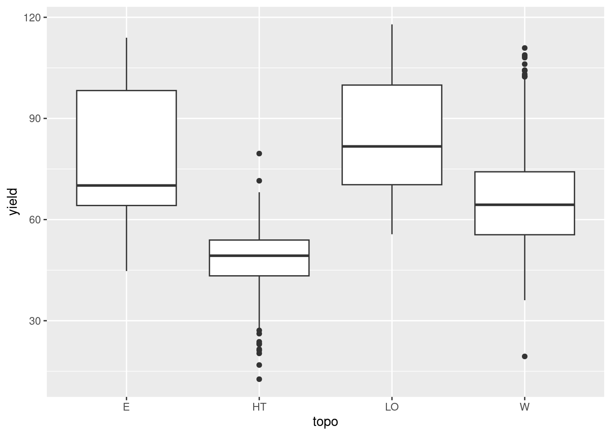
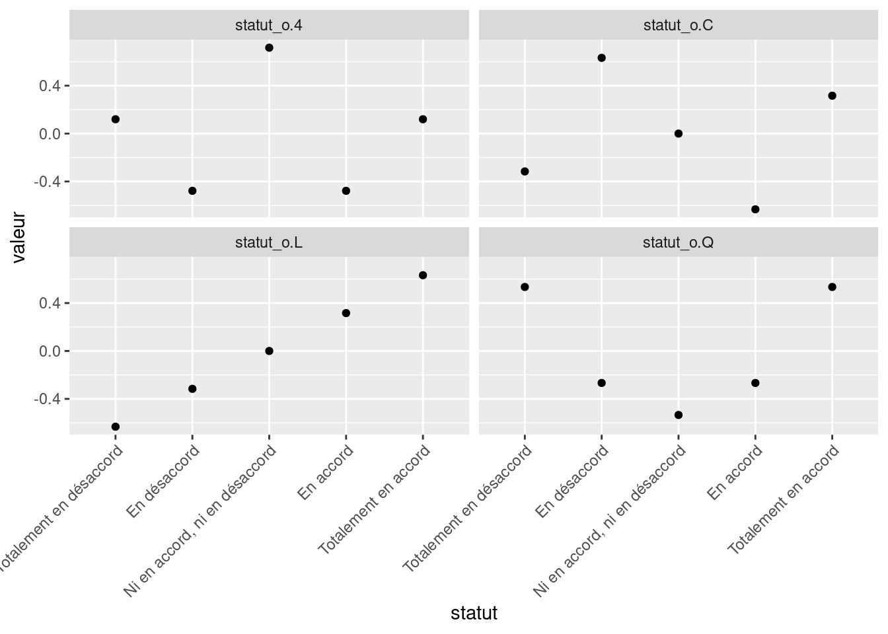
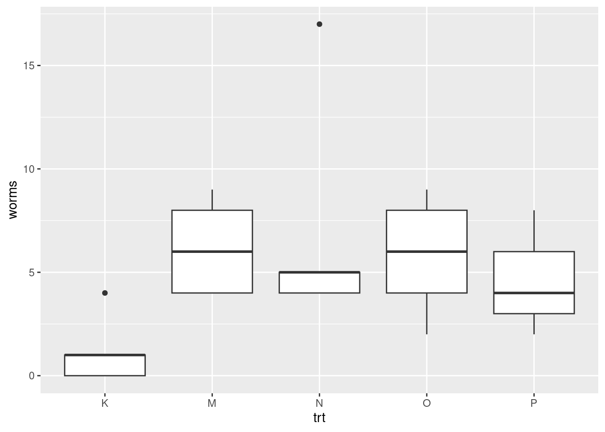

rho <- c(1.34, 1.52, 1.26, 1.43, 1.39) # matrice 1D
data <- data.frame(rho = rho) # tableau
data rho
1 1.34
2 1.52
3 1.26
4 1.43
5 1.39Objectifs spécifiques:
À la fin de ce chapitre, vous
Aux chapitres précédents, nous avons vu comment visualiser, organiser et manipuler des tableaux de données. La statistique est une collection de disciplines liées à la collecte, l’organisation, l’analyse, l’interprétation et la présentation de données. Les biostatistiques sont des applications de ces disciplines à la biosphère.
Dans Principles and procedures of statistics: A biometrical approach, Steel, Torie et Dickey (1997) définissent les statistiques ainsi:
Les statistiques forment la science, pure et appliquée, de la création, du développement, et de l’application de techniques par lesquelles l’incertitude de l’induction inférentielle peut être évaluée. (ma traduction)
Alors que l’inférence consiste à généraliser des échantillons à l’ensemble d’une population, l’induction est un type de raisonnement qui permet de généraliser des observations sous forme de théories. En d’autres mots, les statistiques permettent d’évaluer l’incertitude sur des processus, de passer par inférence de l’échantillon à la population, puis passer cette représentation par induction d’une population en lois générales la concernant.
La définition de Whitlock et Schuluter (2015), dans The Analysis of Biological Data, est plus simple et n’insiste que sur l’inférence:
La statistique est l’étude des méthodes pour mesurer des aspects de populations à partir d’échantillons et pour quantifier l’incertitude des mesures. (ma traduction)
Les statistiques consistent à faire du sens (anglicisme assumé) avec des observations dans l’objectif de répondre à une question que vous aurez formulée clairement, préalablement à votre expérience.
The more time I spend as The Statistician in the room, the more I think the best skill you can cultivate is the ability to remain calm and repeatedly ask “What question are you trying to answer?”
— Bryan Howie (@bryan_howie) 13 décembre 2018
Le flux de travail conventionnel en statistiques consiste à collecter des échantillons, transformer (prétraiter) les données, effectuer des tests, analyser les résultats, les interpréter et les visualiser.
\[Collecte \rightarrow Prétraitement \rightarrow Tests~statistiques \rightarrow Analyse \rightarrow Interprétation \rightarrow Visualisation \]
Ce chapitre à lui seul est trop court pour permettre d’intégrer toutes les connaissances nécessaires à une utilisation raisonnée des statistiques, mais fournit les bases pour aller plus loin. Notez que les erreurs d’interprétation statistiques sont courantes et la consultation de spécialistes n’est souvent pas un luxe. Mais bien que les statistiques soient complexes, la plupart des opérations statistiques peuvent être effectuées sans l’assistance de statisticien.ne.s… à condition de comprendre suffisamment les concepts utilisés.
Dans ce chapitre, nous verrons comment répondre correctement à une question valide et adéquate avec l’aide d’outils de calcul scientifique. Nous couvrirons les notions de base des distributions et des variables aléatoires qui nous permettront d’effectuer des tests statistiques communs avec R. Nous couvrirons aussi les erreurs communément commises en recherche académique et les moyens simples de les éviter.
En plus des modules de base de R nous utiliserons
tidyverse,agridat, ainsi quenlme spécialisé pour la modélisation mixte.Avant de survoler les applications statistiques avec R, je vais rapidement présenter quelques notions importantes en statistiques : populations et échantillons, variables, probabilités et distributions. Ensuite, nous allons effectuer des tests d’hypothèse univariés (notamment les tests de t et les analyses de variance) et détailler la notion controversée de p-value. Je vais m’attarder plus longuement aux modèles linéaires généralisés, incluant en particulier des effets fixes et aléatoires (modèles mixtes), qui fournissent une trousse d’analyse polyvalente en analyse multivariée. Je terminerai avec les perspectives multivariées que sont les matrices de covariance et de corrélation.
Le principe d’inférence consiste à généraliser des conclusions à l’échelle d’une population à partir d’échantillons issus de cette population. Alors qu’une population contient tous les éléments étudiés, un échantillon d’une population est une observation unique. Une expérience bien conçue fera en sorte que les échantillons soient représentatifs de la population qui, la plupart du temps, ne peut être observée entièrement pour des raisons pratiques.
Les principes d’expérimentation servant de base à la conception d’une bonne méthodologie sont présentés dans le cours Dispositifs expérimentaux (BVG-7002). Également, je recommande le livre Principes d’expérimentation: planification des expériences et analyse de leurs résultats de Pierre Dagnelie (2012), disponible en ligne en format PDF. Un bon aperçu des dispositifs expérimentaux est aussi présenté dans Introductory Statistics with R, de Peter Dalgaard (2008), que vous pouvez télécharger du site de la bibliothèque de l’Université Laval vous avez un identifiant autorisé.
Une population est échantillonnée pour induire des paramètres: un rendement typique dans des conditions météorologiques, édaphiques et managériales données, la masse typique des faucons pèlerins, mâles et femelles, le microbiome typique d’un sol agricole ou forestier, etc. Une statistique est une estimation d’un paramètre calculée à partir des données, par exemple une moyenne et un écart-type, ou une ordonnée à l’origine (intercept) et une pente.
Par exemple, la moyenne (\(\mu\)) et l’écart-type (\(\sigma\)) d’une population sont estimés par les moyennes (\(\bar{x}\)) et écarts-types (\(s\)) calculés sur les données issues de l’échantillonnage.
Chaque paramètre est liée à une perspective que l’on désire connaître chez une population. Ces angles d’observations sont les variables.
Nous avons abordé au chapitre 3 la notion de variable par l’intermédiaire d’une donnée. Une variable est l’observation d’une caractéristique décrivant un échantillon. Si la charactéristique varie d’un échantillon à un autre sans que vous en expliquiez la raison (i.e. si identifier la source de la variabilité ne fait pas partie de votre expérience), on parlera de variable aléatoire. Même le hasard est régi par certaines lois: ce qui est aléatoire dans une variable peut être décrit par des lois de probabilité, que nous verrons plus bas.
Mais restons aux variables pour l’instant. Par convention, on peut attribuer aux variables un symbole mathématique. Par exemple, on peut donner à la masse volumique d’un sol (qui est le résultat d’une méthodologie précise) le symbole \(\rho\). Lorsque l’on attribue une valeur à \(\rho\), on parle d’une donnée. Chaque donnée d’une observation a un indice qui lui est propre, que l’on désigne souvent par \(i\), que l’on place en indice \(\rho_i\). Pour la première donnée, on a \(i=1\), donc \(\rho_1\). Pour un nombre \(n\) d’échantillons, on aura \(\rho_1\), \(\rho_2\), \(\rho_3\), …, \(\rho_n\), formant le vecteur \(\rho = \left[\rho_1, \rho_2, \rho_3, ..., \rho_n \right]\).
En R, une variable est associée à un vecteur ou une colonne d’un tableau.
rho <- c(1.34, 1.52, 1.26, 1.43, 1.39) # matrice 1D
data <- data.frame(rho = rho) # tableau
data rho
1 1.34
2 1.52
3 1.26
4 1.43
5 1.39Il existe plusieurs types de variables, qui se regroupent en deux grandes catégories: les variables quantitatives et les variables qualitatives.
Ces variables peuvent être continues dans un espace échantillonnal réel ou discrètes dans un espace échantillonnal ne considérant que des valeurs fixes. Notons que la notion de nombre réel est toujours une approximation en sciences expérimentales comme en calcul numérique, étant donnée que l’on est limité par la précision des appareils comme par le nombre d’octets à utiliser. Bien que les valeurs fixes des distributions discrètes ne soient pas toujours des valeurs entières, c’est bien souvent le cas en biostatistiques comme en démographie, où les décomptes d’individus sont souvent présents (et où la notion de fraction d’individus n’est pas acceptée).
On exprime parfois qu’une variable qualitative est une variable impossible à mesurer numériquement: une couleur, l’appartenance à une espèce ou à une série de sol. Pourtant, dans bien des cas, les variables qualitatives peuvent être encodées en variables quantitatives. Par exemple, on peut accoler des pourcentages de sable, limon et argile à un loam sableux, qui autrement est décrit par la classe texturale d’un sol. Pour une couleur, on peut lui associer une longueur d’onde ou des pourcentages de rouge, vert et bleu, ainsi qu’un ton. En ce qui a trait aux variables ordonnées, il est possible de supposer un étalement. Par exemple, une variable d’intensité faible-moyenne-forte peut être transformée linéairement en valeurs quantitatives -1, 0 et 1. Attention toutefois, l’étalement peut parfois être quadratique ou logarithmique. Les séries de sol peuvent être encodées par la proportion de gleyfication (Parent et al., 2017). Quant aux catégories difficilement transformables en quantités, on pourra passer par l’encodage catégoriel, souvent appelé dummyfication, que nous verrons plus loin. L’analyse qualitative consiste en l’analyse de verbatims, essentiellement utile en sciences sociales: nous n’en n’aurons pas besoin ici. Nous considérerons les variables qualitatives comme des variables quantitatives qui n’ont pas subi de prétraitement.
« Nous sommes si éloignés de connaître tous les agens de la nature, et leurs divers modes d’action ; qu’il ne serait pas philosophique de nier les phénomènes, uniquement parce qu’ils sont inexplicables dans l’état actuel de nos connaissances. Seulement, nous devons les examiner avec une attention d’autant plus scrupuleuse, qu’il paraît plus difficile de les admettre ; et c’est ici que le calcul des probabilités devient indispensable, pour déterminer jusqu’à quel point il faut multiplier les observations ou les expériences, afin d’obtenir en faveur des agens qu’elles indiquent, une probabilité supérieure aux raisons que l’on peut avoir d’ailleurs, de ne pas les admettre. » — Pierre-Simon de Laplace
Une probabilité est la vraisemblance qu’un évènement se réalise chez un échantillon. Les probabilités forment le cadre des systèmes stochastiques, c’est-à-dire des systèmes trop complexes pour en connaître exactement les aboutissants, auxquels on attribue une part de hasard. Ces systèmes sont prédominants dans les processus vivants.
On peut dégager deux perspectives sur les probabilités: l’une passe par une interprétation fréquentielle, l’autre bayésienne.
Une erreur courante consiste à aborder des statistiques fréquentielles comme des statistiques bayésiennes. Par exemple, si l’on désire évaluer la probabilité de l’existence de vie sur Mars, on devra passer par le bayésien, car avec les stats fréquentielles, on devra plutôt conclure si les données sont conformes ou non avec l’hypothèse de la vie sur Mars (exemple tirée du blogue Dynamic Ecology).
Des rivalités factices s’installent entre les tenants des différentes approches, dont chacune, en réalité, répond à des questions différentes dont il convient réfléchir sur les limitations. Bien que les statistiques bayésiennes soient de plus en plus utilisées, nous ne couvrirons dans ce chapitre que l’approche fréquentielle. L’approche bayésienne est néanmoins traitée dans le chapitre 8, qui est facultatif au cours.
Une variable aléatoire peut prendre des valeurs selon des modèles de distribution des probabilités. Une distribution est une fonction mathématique décrivant la probabilité d’observer une série d’évènements. Ces évènements peuvent être des valeurs continues, des nombres entiers, des catégories, des valeurs booléennes (Vrai/Faux), etc. Dépendemment du type de valeur et des observations obtenues, on peut associer des variables à différentes lois de probabilité. Toujours, l’aire sous la courbe d’une distribution de probabilité est égale à 1.
En statistiques inférentielles, les distributions sont les modèles, comprenant certains paramètres comme la moyenne et la variance pour les distributions normales, à partir desquelles les données sont générées.
Il existe deux grandes familles de distribution: discrètes et continues. Les distributions discrètes sont contraintes à des valeurs prédéfinies (finies ou infinies), alors que les distributions continues prennent nécessairement un nombre infini de valeurs, dont la probabilité ne peut pas être évaluée ponctuellement, mais sur un intervalle.
L’espérance mathématique est une fonction de tendance centrale, souvent décrite par un paramètre. Il s’agit de la moyenne d’une population pour une distribution normale. La variance, quant à elle, décrit la variabilité d’une population, i.e. son étalement autour de l’espérance. Pour une distribution normale, la variance d’une population est aussi appelée variance, souvent présentée par l’écart-type (égal à la racine carrée de la variance).
En tant que scénario à deux issues possibles, des tirages à pile ou face suivent une loi binomiale, comme toute variable booléenne prenant une valeur vraie ou fausse. En biostatistiques, les cas communs sont la présence/absence d’une espèce, d’une maladie, d’un trait phylogénétique, ainsi que les catégories encodées. Lorsque l’opération ne comprend qu’un seul échantillon (i.e. un seul tirage à pile ou face), il s’agit d’un cas particulier d’une loi binomiale que l’on nomme une loi de Bernouilli.
Pour 25 tirages à pile ou face indépendants (i.e. dont l’ordre des tirages ne compte pas), on peut dessiner une courbe de distribution dont la somme des probabilités est de 1. La fonction dbinom est une fonction de distribution de probabilités. Les fonctions de distribution de probabilités discrètes sont appelées des fonctions de masse.
── Attaching core tidyverse packages ──────────────────────── tidyverse 2.0.0 ──
✔ dplyr 1.1.4 ✔ readr 2.1.5
✔ forcats 1.0.0 ✔ stringr 1.5.1
✔ ggplot2 3.5.0 ✔ tibble 3.2.1
✔ lubridate 1.9.3 ✔ tidyr 1.3.1
✔ purrr 1.0.2
── Conflicts ────────────────────────────────────────── tidyverse_conflicts() ──
✖ dplyr::filter() masks stats::filter()
✖ dplyr::lag() masks stats::lag()
ℹ Use the conflicted package (<http://conflicted.r-lib.org/>) to force all conflicts to become errorsx <- 0:25
y <- dbinom(x = x, size = 25, prob = 0.5)
print(paste('La somme des probabilités est de', sum(y)))[1] "La somme des probabilités est de 1"ggplot(data = tibble(x, y), mapping = aes(x, y)) +
geom_segment(aes(x = x, xend = x, y = 0, yend = y), color = "grey50") +
geom_point()La loi de Poisson (avec un P majuscule, introduite par le mathématicien français Siméon Denis Poisson et non pas l’animal) décrit des distributions discrètes de probabilité d’un nombre d’évènements se produisant dans l’espace ou dans le temps. Les distributions de Poisson décrivent ce qui tient du décompte. Il peut s’agir du nombre de grenouilles traversant une rue quotidiennement, du nombre de plants d’asclépiades se trouvant sur une terre cultivée, ou du nombre d’évènements de précipitation au mois de juin, etc. La distribution de Poisson n’a qu’un seul paramètre, \(\lambda\), qui décrit la moyenne des décomptes.
Par exemple, en un mois de 30 jours, et une moyenne de 8 évènements de précipitation pour ce mois, on obtient la distribution suivante.
[1] "La somme des probabilités est de 0.999664536835124"ggplot(data = data.frame(x, y), mapping = aes(x, y)) +
geom_segment(aes(x = x, xend = x, y = 0, yend = y), color = "grey50") +
geom_point()La distribution la plus simple est probablement la distribution uniforme. Si la variable est discrète, chaque catégorie est associée à une probabilité égale. Si la variable est continue, la probabilité est directement proportionnelle à la largeur de l’intervalle. On utilise rarement la distribution uniforme en biostatistiques, sinon pour décrire des a priori vagues pour l’analyse bayésienne (ce sujet est traité dans le chapitre 8). Nous utilisons la fonction dunif. À la différence des distributions discrètes, les fonctions de distribution de probabilités continues sont appelées des fonctions de densité d’une loi de probabilité (probability density function).
increment <- 0.01
x <- seq(-4, 4, by = increment)
y1 <- dunif(x, min = -3, max = 3)
y2 <- dunif(x, min = -2, max = 2)
y3 <- dunif(x, min = -1, max = 1)
print(paste('La somme des probabilités est de', sum(y3 * increment)))[1] "La somme des probabilités est de 1.005"gg_unif <- data.frame(x, y1, y2, y3) |>
pivot_longer(-x, names_to = "variable", values_to = "value")
ggplot(data = gg_unif, mapping = aes(x = x, y = value)) +
geom_line(aes(colour = variable))La plus répandue de ces lois est probablement la loi normale, parfois nommée loi gaussienne et plus rarement loi laplacienne. Il s’agit de la distribution classique en forme de cloche.
La loi normale est décrite par une moyenne, qui désigne la tendance centrale, et une variance, qui désigne l’étalement des probabilités autour de la moyenne. La racine carrée de la variance est l’écart-type.
Les distributions de mesures exclusivement positives (comme le poids ou la taille) sont parfois avantageusement approximées par une loi log-normale, qui est une loi normale sur le logarithme des valeurs: la moyenne d’une loi log-normale est la moyenne géométrique.
increment <- 0.01
x <- seq(-10, 10, by = increment)
y1 <- dnorm(x, mean = 0, sd = 1)
y2 <- dnorm(x, mean = 0, sd = 2)
y3 <- dnorm(x, mean = 0, sd = 3)
print(paste('La somme des probabilités est de', sum(y3 * increment)))[1] "La somme des probabilités est de 0.999147010743368"gg_norm <- data.frame(x, y1, y2, y3) |>
pivot_longer(-x, names_to = "variable", values_to = "value")
ggplot(data = gg_norm, mapping = aes(x = x, y = value)) +
geom_line(aes(colour = variable))Quelle est la probabilité d’obtenir le nombre 0 chez une observation continue distribuée normalement dont la moyenne est 0 et l’écart-type est de 1? Réponse: 0. La loi normale étant une distribution continue, les probabilités non-nulles ne peuvent être calculées que sur des intervalles. Par exemple, la probabilité de retrouver une valeur dans l’intervalle entre -1 et 2 est calculée en soustrayant la probabilité cumulée à -1 de la probabilité cumulée à 2.
increment <- 0.01
x <- seq(-5, 5, by = increment)
y <- dnorm(x, mean = 0, sd = 1)
prob_between <- c(-1, 2)
gg_norm <- data.frame(x, y)
gg_auc <- gg_norm |>
filter(x > prob_between[1], x < prob_between[2]) |>
rbind(c(prob_between[2], 0)) |>
rbind(c(prob_between[1], 0))
ggplot(data.frame(x, y), aes(x, y)) +
geom_polygon(data = gg_auc, fill = '#71ad50') + # #71ad50 est un code de couleur format hexadécimal
geom_line()prob_norm_between <- pnorm(q = prob_between[2], mean = 0, sd = 1) - pnorm(q = prob_between[1], mean = 0, sd = 1)
print(paste("La probabilité d'obtenir un nombre entre",
prob_between[1], "et",
prob_between[2], "est d'environ",
round(prob_norm_between, 2) * 100, "%"))[1] "La probabilité d'obtenir un nombre entre -1 et 2 est d'environ 82 %"La courbe normale peut être utile pour évaluer la distribution d’une population. Par exemple, on peut calculer les limites de région sur la courbe normale qui contient 95% des valeurs possibles en tranchant 2.5% de part et d’autre de la moyenne. Il s’agit ainsi de l’intervalle de confiance sur la déviation de la distribution.
increment <- 0.01
x <- seq(-5, 5, by = increment)
y <- dnorm(x, mean = 0, sd = 1)
alpha <- 0.05
prob_between <- c(qnorm(p = alpha/2, mean = 0, sd = 1),
qnorm(p = 1 - alpha/2, mean = 0, sd = 1))
gg_norm <- data.frame(x, y)
gg_auc <- gg_norm |>
filter(x > prob_between[1], x < prob_between[2]) |>
rbind(c(prob_between[2], 0)) |>
rbind(c(prob_between[1], 0))
ggplot(data = data.frame(x, y), mapping = aes(x, y)) +
geom_polygon(data = gg_auc, fill = '#71ad50') + # #71ad50 est un code de couleur format hexadécimal
geom_line() +
geom_text(data = data.frame(x = prob_between,
y = c(0, 0),
labels = round(prob_between, 2)),
mapping = aes(label = labels))On pourrait aussi être intéressé à l’intervalle de confiance sur la moyenne. En effet, la moyenne suit aussi une distribution normale, dont la tendance centrale est la moyenne de la distribution, et dont l’écart-type est noté erreur standard. On calcule cette erreur en divisant la variance par le nombre d’observation, ou en divisant l’écart-type par la racine carrée du nombre d’observations. Ainsi, pour 10 échantillons:
increment <- 0.01
x <- seq(-5, 5, by = increment)
y <- dnorm(x, mean = 0, sd = 1)
alpha <- 0.05
prob_between <- c(qnorm(p = alpha/2, mean = 0, sd = 1) / sqrt(10),
qnorm(p = 1 - alpha/2, mean = 0, sd = 1) / sqrt(10))
gg_norm <- data.frame(x, y)
gg_auc <- gg_norm |>
filter(x > prob_between[1], x < prob_between[2]) |>
rbind(c(prob_between[2], 0)) |>
rbind(c(prob_between[1], 0))
ggplot(data = data.frame(x, y), mapping = aes(x, y)) +
geom_polygon(data = gg_auc, fill = '#71ad50') + # #71ad50 est un code de couleur format hexadécimal
geom_line() +
geom_text(data = data.frame(x = prob_between,
y = c(0, 0),
labels = round(prob_between, 2)),
mapping = aes(label = labels))On a vu comment générer des statistiques sommaires en R avec la fonction summary(). Reprenons les données d’iris.
Sepal.Length Sepal.Width Petal.Length Petal.Width
Min. :4.300 Min. :2.000 Min. :1.000 Min. :0.100
1st Qu.:5.100 1st Qu.:2.800 1st Qu.:1.600 1st Qu.:0.300
Median :5.800 Median :3.000 Median :4.350 Median :1.300
Mean :5.843 Mean :3.057 Mean :3.758 Mean :1.199
3rd Qu.:6.400 3rd Qu.:3.300 3rd Qu.:5.100 3rd Qu.:1.800
Max. :7.900 Max. :4.400 Max. :6.900 Max. :2.500
Species
setosa :50
versicolor:50
virginica :50
Pour précisément effectuer une moyenne et un écart-type sur un vecteur, passons par les fonctions mean() et sd().
Pour effectuer un sommaire de tableau piloté par une fonction, nous passons par la gamme de fonctions summarise(), de dplyr. Dans ce cas, avec group_by(), nous fragmentons le tableau par espèce pour effectuer un sommaire sur toutes les variables.
iris |>
group_by(Species) |>
summarise_all(mean)# A tibble: 3 × 5
Species Sepal.Length Sepal.Width Petal.Length Petal.Width
<fct> <dbl> <dbl> <dbl> <dbl>
1 setosa 5.01 3.43 1.46 0.246
2 versicolor 5.94 2.77 4.26 1.33
3 virginica 6.59 2.97 5.55 2.03 Vous pourriez être intéressé par les quartiles à 25, 50 et 75%. Mais la fonction summarise() n’autorise que les fonctions dont la sortie est d’un seul objet, alors faisons sorte que l’objet soit une liste - lorsque l’on imbrique une fonction funs, le tableau à insérer dans la fonction est indiqué par un ..
iris |>
group_by(Species) |>
summarise_all(list(q25 = ~ quantile(., probs = 0.25),
q50 = ~ quantile(., probs = 0.50),
q75 = ~ quantile(., probs = 0.75)))# A tibble: 3 × 13
Species Sepal.Length_q25 Sepal.Width_q25 Petal.Length_q25 Petal.Width_q25
<fct> <dbl> <dbl> <dbl> <dbl>
1 setosa 4.8 3.2 1.4 0.2
2 versicolor 5.6 2.52 4 1.2
3 virginica 6.22 2.8 5.1 1.8
# ℹ 8 more variables: Sepal.Length_q50 <dbl>, Sepal.Width_q50 <dbl>,
# Petal.Length_q50 <dbl>, Petal.Width_q50 <dbl>, Sepal.Length_q75 <dbl>,
# Sepal.Width_q75 <dbl>, Petal.Length_q75 <dbl>, Petal.Width_q75 <dbl>En mode programmation classique de R, on pourra générer les quartiles à la pièce.
quantile(iris$Sepal.Length[iris$Species == 'setosa']) 0% 25% 50% 75% 100%
4.3 4.8 5.0 5.2 5.8 quantile(iris$Sepal.Length[iris$Species == 'versicolor']) 0% 25% 50% 75% 100%
4.9 5.6 5.9 6.3 7.0 quantile(iris$Sepal.Length[iris$Species == 'virginica']) 0% 25% 50% 75% 100%
4.900 6.225 6.500 6.900 7.900 La fonction table() permettra d’obtenir des décomptes par catégorie, ici par plages de longueurs de sépales. Pour obtenir les proportions du nombre total, il s’agit d’encapsuler le tableau croisé dans la fonction prop.table().
tableau_croise <- table(iris$Species,
cut(iris$Sepal.Length, breaks = quantile(iris$Sepal.Length)))
tableau_croise
(4.3,5.1] (5.1,5.8] (5.8,6.4] (6.4,7.9]
setosa 35 14 0 0
versicolor 4 20 17 9
virginica 1 5 18 26prop.table(tableau_croise)
(4.3,5.1] (5.1,5.8] (5.8,6.4] (6.4,7.9]
setosa 0.234899329 0.093959732 0.000000000 0.000000000
versicolor 0.026845638 0.134228188 0.114093960 0.060402685
virginica 0.006711409 0.033557047 0.120805369 0.174496644Un test d’hypothèse permet de décider si une hypothèse est confirmée ou rejetée à un seuil de probabilité prédéterminé.
Cette section est inspirée du chapitre 5 de Dalgaard, 2008.
Information: l’hypothèse nulle. Les tests d’hypothèse évaluent des effets statistiques (qui ne sont pas nécessairement des effets de causalité). L’effet à évaluer peut être celui d’un traitement, d’indicateurs météorologiques (e.g. précipitations totales, degré-jour, etc.), de techniques de gestion des paysages, etc. Une recherche est menée pour évaluer l’hypothèse que l’on retrouve des différences entre des unités expérimentales. Par convention, l’hypothèse nulle (écrite \(H_0\)) est l’hypothèse qu’il n’y ait pas d’effet (c’est l’hypothèse de l’avocat du diable 😈) à l’échelle de la population (et non pas à l’échelle de l’échantillon). À l’inverse, l’hypothèse alternative (écrite \(H_1\)) est l’hypothèse qu’il y ait un effet à l’échelle de la population.
À titre d’exercice en stats, on débute souvent en testant si deux vecteurs de valeurs continues proviennent de populations à moyennes différentes ou si un vecteur de valeurs a été généré à partir d’une population ayant une moyenne donnée. Dans cette section, nous utiliserons la fonction t.test() pour les tests de t et la fonction wilcox.test() pour les tests de Wilcoxon (aussi appelé de Mann-Whitney).
Nous devons assumer, pour ce test, que l’échantillon est recueillit d’une population dont la distribution est normale, \(\mathcal{N} \sim \left( \mu, \sigma^2 \right)\), et que chaque échantillon est indépendant l’un de l’autre. L’hypothèse nulle est souvent celle de l’avocat du diable, que la moyenne soit égale à une valeur donnée (donc la différence entre la moyenne de la population et une moyenne donnée est de zéro): ici, que \(\mu = \bar{x}\). L’erreur standard sur la moyenne (ESM) de l’échantillon, \(\bar{x}\) est calculée comme suit.
\[ESM = \frac{s}{\sqrt{n}}\]
où \(s\) est l’écart-type de l’échantillon et \(n\) est le nombre d’échantillons.
Pour tester l’intervalle de confiance de l’échantillon, on multiplie l’ESM par l’aire sous la courbe de densité couvrant une certaine proportion de part et d’autre de l’échantillon. Pour un niveau de confiance de 95%, on retranche 2.5% de part et d’autre.
set.seed(33746)
x <- rnorm(20, 16, 4)
level <- 0.95
alpha <- 1-level
x_bar <- mean(x)
s <- sd(x)
n <- length(x)
error <- qnorm(1 - alpha/2) * s / sqrt(n)
error[1] 1.483253L’intervalle de confiance est l’erreur de part et d’autre de la moyenne.
c(x_bar - error, x_bar + error)[1] 14.35630 17.32281Si la moyenne de la population est de 16, un nombre qui se situe dans l’intervalle de confiance on accepte l’hypothèse nulle au seuil 0.05. Si le nombre d’échantillon est réduit (généralement < 30), on passera plutôt par une distribution de t, avec \(n-1\) degrés de liberté.
Plus simplement, on pourra utiliser la fonction t.test() en spécifiant la moyenne de la population. Nous avons généré 20 données avec une moyenne de 16 et un écart-type de 4. Nous savons donc que la vraie moyenne de l’échantillon est de 16. Mais disons que nous testons l’hypothèse que ces données sont tirées d’une population dont la moyenne est 18 (et implicitement que son écart-type est de 4).
t.test(x, mu = 18)
One Sample t-test
data: x
t = -2.8548, df = 19, p-value = 0.01014
alternative hypothesis: true mean is not equal to 18
95 percent confidence interval:
14.25561 17.42351
sample estimates:
mean of x
15.83956 La fonction retourne la valeur de t (t-value), le nombre de degrés de liberté (\(n-1 = 19\)), une description de l’hypothèse alternative (alternative hypothesis: true mean is not equal to 18), ainsi que l’intervalle de confiance au niveau de 95%. Le test contient aussi la p-value.
La p-value, ou valeur-p ou p-valeur, est utilisée pour trancher si, oui ou non, un résultat est significatif. En langage scientifique, le mot significatif ne devrait être utilisé que lorsque l’on réfère à un test d’hypothèse statistique. Vous retrouverez des p-values partout en stats. Les p-values indiquent la probabilité que les données ait été échantillonnées d’une population où un effet est observable selon le modèle statistique utilisé.
La p-value est la probabilité que les données aient été générées pour obtenir un effet équivalent ou plus prononcé si l’hypothèse nulle est vraie.
Une p-value élevée indique que le modèle appliqué à vos données concorde avec la conclusion que l’hypothèse nulle est vraie, et inversement si la p-value est faible. Le seuil arbitraire utilisée en écologie et en agriculture, comme dans plusieurs domaines, est de 0.05. L’utilisation d’un seuil est toutefois contestée avec raison. Une enquête menée dans la littérature scientifiques a révélé que 49% des 791 articles étudiés interprétaient un effet non significatif comme un effet nul (Amrhein et al., 2019). En effet, une catégorisation de la p-value avec un seuil de significativité brouille le jugement sur l’importance des effets et de leur incertitude. Les six principes de l’American Statistical Association guident l’interprétation des p-values. [ma traduction]
Dans le cas précédent, la p-value était de 0.01014. Pour aider notre interprétation, prenons l’hypothèse alternative: true mean is not equal to 18. L’hypothèse nulle était bien que la vraie moyenne est égale à 18. Insérons la p-value dans la définition: la probabilité que les données aient été générées pour obtenir un effet équivalent ou plus prononcé si l’hypothèse nulle est vraie est de 0.01014. Il est donc très peu probable que les données soient tirées d’un échantillon dont la moyenne est de 18. Au seuil de signification de 0.05, on rejette l’hypothèse nulle et l’on conclut qu’à ce seuil de confiance, l’échantillon ne provient pas d’une population ayant une moyenne de 18.
“La p-value n’a jamais été conçue comme substitut au raisonnement scientifique” Ron Wasserstein, directeur de l’American Statistical Association [ma traduction].
Un résultat montrant une p-value plus élevée que 0.05 est-il pertinent?
Lors d’une conférence, Dr Evil ne présente que les résultats significatifs de ses essais au seuil de 0.05. Certains essais ne sont pas significatifs, mais bon, ceux-ci ne sont pas importants… En écartant ces résultats, Dr Evil commet 3 erreurs:
Le p-hacking (ou data dredging) consiste à manipuler les données et les modèles pour faire en sorte d’obtenir des p-values favorables à l’hypothèse testée et, éventuellement, aux conclusions recherchées. À éviter dans tous les cas. Toujours. Toujours. Toujours.
Le test de t suppose que la distribution des données est normale… ce qui est rarement le cas, surtout lorsque les échantillons sont peu nombreux. Le test de Wilcoxon ne demande aucune supposition sur la distribution: c’est un test non-paramétrique basé sur le tri des valeurs.
wilcox.test(x, mu = 18)
Wilcoxon signed rank exact test
data: x
V = 39, p-value = 0.01208
alternative hypothesis: true location is not equal to 18Le V est la somme des rangs positifs. Dans ce cas, la p-value est semblable à celle du test de t, et les mêmes conclusions s’appliquent.
Les tests à un échantillon servent plutôt à s’exercer: rarement en aura-t-on besoin en recherche, où plus souvent, on voudra comparer les moyennes de deux unités expérimentales. L’expérience comprend donc deux séries de données continues, \(x_1\) et \(x_2\), issues de lois de distribution normale \(\mathcal{N} \left( \mu_1, \sigma_1^2 \right)\) et \(\mathcal{N} \left( \mu_2, \sigma_2^2 \right)\), et nous testons l’hypothèse nulle que \(\mu_1 = \mu_2\). La statistique t est calculée comme suit.
\[t = \frac{\bar{x_1} - \bar{x_2}}{ESDM}\]
L’ESDM est l’erreur standard de la différence des moyennes:
\[ESDM = \sqrt{ESM_1^2 + ESM_2^2}\]
Si vous supposez que les variances sont identiques, l’erreur standard (\(s\)) est calculée pour les échantillons des deux groupes, puis insérée dans le calcul des ESM. La statistique t sera alors évaluée à \(n_1 + n_2 - 2\) degrés de liberté. Si vous supposez que la variance est différente (procédure de Welch), vous calculez les ESM avec les erreurs standards respectives, et la statistique t devient une approximation de la distribution de t avec un nombre de degrés de liberté calculé à partir des erreurs standards et du nombre d’échantillon dans les groupes: cette procédure est considérée comme plus prudente (Dalgaard, 2008, page 101).
Prenons les données d’iris pour l’exemple en excluant l’iris setosa étant donnée que les tests de t se restreignent à deux groupes. Nous allons tester la longueur des pétales.
iris_pl <- iris |>
filter(Species != "setosa") |>
select(Species, Petal.Length)
slice_sample(iris_pl, n = 5) Species Petal.Length
1 virginica 5.1
2 versicolor 4.0
3 virginica 5.0
4 versicolor 4.6
5 versicolor 4.1Dans la prochaine cellule de code, nous introduisons l’interface-formule de R, où l’on retrouve typiquement le ~, entre les variables de sortie à gauche et les variables d’entrée à droite. Dans notre cas, la variable de sortie est la variable testée, Petal.Length, qui varie en fonction du groupe Species, qui est la variable d’entrée (variable explicative) - nous verrons les types de variables plus en détails dans la section sur les modèles statistiques (chapitre 7.8).
t.test(formula = Petal.Length ~ Species,
data = iris_pl, var.equal = FALSE)
Welch Two Sample t-test
data: Petal.Length by Species
t = -12.604, df = 95.57, p-value < 2.2e-16
alternative hypothesis: true difference in means between group versicolor and group virginica is not equal to 0
95 percent confidence interval:
-1.49549 -1.08851
sample estimates:
mean in group versicolor mean in group virginica
4.260 5.552 Nous obtenons une sortie similaire aux précédentes. L’intervalle de confiance à 95% exclut le zéro, ce qui est cohérent avec la p-value très faible, qui nous indique le rejet de l’hypothèse nulle au seuil 0.05. Les données montrent que les groupes ont des moyennes de longueur de pétales différentes.
Il est possible d’enregistrer un test dans un objet.
Length Class Mode
statistic 1 -none- numeric
parameter 1 -none- numeric
p.value 1 -none- numeric
conf.int 2 -none- numeric
estimate 2 -none- numeric
null.value 1 -none- numeric
stderr 1 -none- numeric
alternative 1 -none- character
method 1 -none- character
data.name 1 -none- characterstr(tt_pl)List of 10
$ statistic : Named num -12.6
..- attr(*, "names")= chr "t"
$ parameter : Named num 95.6
..- attr(*, "names")= chr "df"
$ p.value : num 4.9e-22
$ conf.int : num [1:2] -1.5 -1.09
..- attr(*, "conf.level")= num 0.95
$ estimate : Named num [1:2] 4.26 5.55
..- attr(*, "names")= chr [1:2] "mean in group versicolor" "mean in group virginica"
$ null.value : Named num 0
..- attr(*, "names")= chr "difference in means between group versicolor and group virginica"
$ stderr : num 0.103
$ alternative: chr "two.sided"
$ method : chr "Welch Two Sample t-test"
$ data.name : chr "Petal.Length by Species"
- attr(*, "class")= chr "htest"Pour comparer les variances, on a recours au test de F (F pour Fisher).
var.test(formula = Petal.Length ~ Species,
data = iris_pl)
F test to compare two variances
data: Petal.Length by Species
F = 0.72497, num df = 49, denom df = 49, p-value = 0.2637
alternative hypothesis: true ratio of variances is not equal to 1
95 percent confidence interval:
0.411402 1.277530
sample estimates:
ratio of variances
0.7249678 Il semble que l’on pourrait relancer le test de t sans la procédure Welch, avec var.equal = TRUE.
Cela ressemble au test de t!
wilcox.test(formula = Petal.Length ~ Species,
data = iris_pl, var.equal = TRUE)
Wilcoxon rank sum test with continuity correction
data: Petal.Length by Species
W = 44.5, p-value < 2.2e-16
alternative hypothesis: true location shift is not equal to 0Les tests pairés sont utilisés lorsque deux échantillons proviennent d’une même unité expérimentale: il s’agit en fait de tests sur la différence entre deux observations.
Il est important de spécifier que le test est pairé, la valeur par défaut de paired étant FALSE.
t.test(avant, apres, paired = TRUE)
Paired t-test
data: avant and apres
t = -1.5168, df = 19, p-value = 0.1458
alternative hypothesis: true mean difference is not equal to 0
95 percent confidence interval:
-4.5804586 0.7311427
sample estimates:
mean difference
-1.924658 L’hypothèse nulle qu’il n’y ait pas de différence entre l’avant et l’après traitement est acceptée au seuil 0.05.
Exercice. Effectuer un test de Wilcoxon pairé.
L’analyse de variance consiste à comparer des moyennes de plusieurs groupes distribués normalement et de même variance. Cette section sera élaborée prochainement plus en profondeur. Considérons-la pour le moment comme une régression sur une variable catégorielle.
Df Sum Sq Mean Sq F value Pr(>F)
Species 2 437.1 218.55 1180 <2e-16 ***
Residuals 147 27.2 0.19
---
Signif. codes: 0 '***' 0.001 '**' 0.01 '*' 0.05 '.' 0.1 ' ' 1La prochaine section, justement, est vouée aux modèles statistiques explicatifs, qui incluent la régression.
La modélisation statistique consiste à lier de manière explicite des variables de sortie \(y\) (ou variables-réponse / variables dépendantes) à des variables explicatives \(x\) (ou variables prédictives / indépendantes / covariables). Les variables-réponse sont modélisées par une fonction des variables explicatives ou prédictives.
Pourquoi garder les termes explicatives et prédictives? Parce que les modèles statistiques (basés sur des données et non pas sur des mécanismes) sont de deux ordres. D’abord, les modèles prédictifs sont conçus pour prédire de manière fiable une ou plusieurs variables-réponse à partir des informations contenues dans les variables qui sont, dans ce cas, prédictives (par exemple : Les séries temporelles au chapitre 12). Lorsque l’on désire tester des hypothèses pour évaluer quelles variables expliquent la réponse, on parlera de modélisation (et de variables) explicative. En inférence statistique, on évaluera les corrélations entre les variables explicatives et les variables-réponse. Un lien de corrélation n’est pas un lien de causalité. L’inférence causale peut en revanche être évaluée par des modèles d’équations structurelles.
Cette section couvre la modélisation explicative. Les variables qui contribuent à créer les modèles peuvent être de différentes natures et distribuées selon différentes lois de probabilité. Alors que les modèles linéaires simples (lm) impliquent une variable-réponse distribuée de manière continue, les modèles linéaires généralisés peuvent aussi expliquer des variables de sorties discrètes.
Dans les deux cas, on distinguera les variables fixes et les variables aléatoires. Les variables fixes sont les variables testées lors de l’expérience: dose du traitement, espèce/cultivar, météo, etc. Les variables aléatoires sont les sources de variation qui génèrent du bruit dans le modèle: les unités expérimentales ou le temps lors de mesures répétées. Les modèles incluant des effets fixes seulement sont des modèles à effets fixes. Généralement, les modèles incluant des variables aléatoires incluent aussi des variables fixes: on parlera alors de modèles mixtes. Nous couvrirons ces deux types de modèles.
Les tests de t et de Wilcoxon, explorés précédemment, sont des modèles statistiques à une seule variable. Nous avons vu dans l’interface-formule qu’une variable-réponse peut être liée à une variable explicative avec le tilde ~. En particulier, le test de t est une régression linéaire univariée (à une seule variable explicative) dont la variable explicative comprend deux catégories. De même, l’anova est une régression linéaire univariée dont la variable explicative comprend plusieurs catégories. Or l’interface-formule peut être utilisé dans plusieurs circonstances, notamment pour ajouter plusieurs variables de différents types: on parlera de régression multivariée.
La plupart des modèles statistiques peuvent être approximés comme une combinaison linéaire de variables: ce sont des modèles linéaires. Les modèles non-linéaires impliquent des stratégies computationnelles complexes qui rendent leur utilisation plus difficile à manœuvrer.
Un modèle linéaire univarié prendra la forme \(y = \beta_0 + \beta_1 x + \epsilon\), où \(\beta_0\) est l’intercept et \(\beta_1\) est la pente et \(\epsilon\) est l’erreur.
Vous verrez parfois la notation \(\hat{y} = \beta_0 + \beta_1 x\). La notation avec le chapeau \(\hat{y}\) exprime qu’il s’agit des valeurs générées par le modèle. En fait, \(y = \hat{y} - \epsilon\).
Prenons les données lasrosas.corn incluses dans le module agridat, où l’on retrouve le rendement d’une production de maïs à dose d’azote variable, en Argentine.
library("agridat")
data("lasrosas.corn")
slice_sample(lasrosas.corn, n = 10) year lat long yield nitro topo bv rep nf
1 1999 -33.05207 -63.84230 69.57 0.0 LO 185.67 R1 N0
2 1999 -33.05137 -63.84383 67.41 53.0 E 175.12 R2 N2
3 1999 -33.05104 -63.84323 68.33 29.0 LO 168.70 R3 N1
4 1999 -33.05162 -63.84456 68.06 53.0 E 171.71 R1 N2
5 1999 -33.05180 -63.84386 63.99 0.0 LO 172.46 R1 N0
6 2001 -33.05065 -63.84578 35.85 50.6 HT 194.85 R1 N2
7 1999 -33.05170 -63.84553 58.89 131.5 HT 187.98 R1 N5
8 2001 -33.05077 -63.84502 50.95 124.6 HT 184.66 R2 N5
9 1999 -33.05181 -63.84202 78.75 106.0 LO 169.25 R2 N4
10 1999 -33.05154 -63.84468 68.58 29.0 E 169.35 R1 N1Ces données comprennent plusieurs variables. Prenons le rendement (yield) comme variable de sortie et, pour le moment, ne retenons que la dose d’azote (nitro) comme variable explicative: il s’agit d’une régression univariée. Les deux variables sont continues. Explorons d’abord le nuage de points de l’une et l’autre.
ggplot(data = lasrosas.corn, mapping = aes(x = nitro, y = yield)) +
geom_point()L’hypothèse nulle est que la dose d’azote n’affecte pas le rendement, c’est à dire que le coefficient de pente et nul. Une autre hypothèse est que l’intercept est nul, c’est à dire qu’à une dose de 0, le rendement est de 0. Un modèle linéaire à variable de sortie continue est créé avec la fonction lm(), pour linear model.
Call:
lm(formula = yield ~ nitro, data = lasrosas.corn)
Residuals:
Min 1Q Median 3Q Max
-53.183 -15.341 -3.079 13.725 45.897
Coefficients:
Estimate Std. Error t value Pr(>|t|)
(Intercept) 65.843213 0.608573 108.193 < 2e-16 ***
nitro 0.061717 0.007868 7.845 5.75e-15 ***
---
Signif. codes: 0 '***' 0.001 '**' 0.01 '*' 0.05 '.' 0.1 ' ' 1
Residual standard error: 19.66 on 3441 degrees of freedom
Multiple R-squared: 0.01757, Adjusted R-squared: 0.01728
F-statistic: 61.54 on 1 and 3441 DF, p-value: 5.754e-15Le diagnostic du modèle comprend plusieurs informations. D’abord, la formule utilisée est affichée pour la traçabilité. Vient ensuite un aperçu de la distribution des résidus. La médiane devrait s’approcher de la moyenne des résidus (qui est toujours de 0). Bien que le -3.079 peut sembler important, il faut prendre en considération l’échelle de y, et ce -3.079 est exprimé en terme de rendement, ici en quintaux (i.e. 100 kg) par hectare. La distribution des résidus mérite d’être davantage investiguée. Nous verrons cela un peu plus tard.
Les coefficients apparaissent ensuite. Les estimés sont les valeurs des effets. R fournit aussi l’erreur standard associée, la valeur de t ainsi que la p-value (la probabilité d’obtenir cet effet ou un effet plus extrême si en réalité il y avait absence d’effet). L’intercept est bien sûr plus élevé que 0 (à dose nulle, on obtient un rendement de 65.8 quintaux par hectare en moyenne). La pente de la variable nitro est de ~0.06: pour chaque augmentation d’un kg/ha de dose, on a obtenu ~0.06 quintaux/ha de plus de maïs. Donc pour 100 kg/ha de N, on a obtenu un rendement moyen de 6 quintaux de plus que l’intercept. Soulignons que l’ampleur du coefficient est très important pour guider la fertilisation: ne rapporter que la p-value, ou ne rapporter que le fait qu’elle est inférieure à 0.05 (ce qui arrive souvent dans la littérature), serait très insuffisant pour l’interprétation des statistiques. La p-value nous indique néanmoins qu’il serait très improbable qu’une telle pente ait été générée alors que celle-ci est nulle en réalité. Les étoiles à côté des p-values indiquent l’ampleur selon l’échelle Signif. codes indiquée en-dessous du tableau des coefficients.
Sous ce tableau, R offre d’autres statistiques. En outre, les R² et R² ajustés indiquent si la régression passe effectivement par les points. Le R² prend un maximum de 1 lorsque la droite passe exactement sur les points.
Enfin, le test de F génère une p-value indiquant la probabilité que les coefficients de pente ait été générés si les vrais coefficients étaient nuls. Dans le cas d’une régression univariée, cela répète l’information sur l’unique coefficient.
On pourra également obtenir les intervalles de confiance avec la fonction confint().
confint(modlin_1, level = 0.95) 2.5 % 97.5 %
(Intercept) 64.65001137 67.03641474
nitro 0.04629164 0.07714271Ou soutirer l’information de différentes manières, comme avec la fonction coefficients().
coefficients(modlin_1)(Intercept) nitro
65.84321305 0.06171718 Également, on pourra exécuter le modèle sur les données qui ont servi à le générer:
predict(modlin_1)[1:5] 1 2 3 4 5
73.95902 73.95902 73.95902 73.95902 73.95902 Ou sur des données externes.
nouvelles_donnees <- data.frame(nitro = seq(from = 0, to = 100, by = 5))
predict(modlin_1, newdata = nouvelles_donnees)[1:5] 1 2 3 4 5
65.84321 66.15180 66.46038 66.76897 67.07756 Les résidus sont les erreurs du modèle. C’est le vecteur \(\epsilon\), qui est un décalage entre les données et le modèle. Le R² est un indicateur de l’ampleur du décalage, mais une régression linéaire explicative en bonne et due forme devrait être accompagnée d’une analyse des résidus. On peut les calculer par \(\epsilon = y - \hat{y}\), ou alors simplement utiliser la fonction residuals().
res_df <- data.frame(nitro = lasrosas.corn$nitro,
residus_lm = residuals(modlin_1),
residus_calcul = lasrosas.corn$yield - predict(modlin_1))
slice_sample(res_df, n = 10) nitro residus_lm residus_calcul
2931 124.6 24.666827 24.666827
1793 124.6 11.126827 11.126827
2006 99.8 25.417413 25.417413
116 66.0 -11.636547 -11.636547
1235 131.5 11.460978 11.460978
2426 75.4 -18.686688 -18.686688
1132 29.0 -1.763011 -1.763011
15 131.5 -11.289022 -11.289022
1691 131.5 -5.639022 -5.639022
38 131.5 -13.129022 -13.129022Dans une bonne régression linéaire, on ne retrouvera pas de structure identifiable dans les résidus, c’est-à-dire que les résidus sont bien distribués de part et d’autre du modèle de régression.
ggplot(res_df, aes(x = nitro, y = residus_lm)) +
geom_point() +
labs(x = "Dose N", y = "Résidus") +
geom_hline(yintercept = 0, col = "red", size = 1)Warning: Using `size` aesthetic for lines was deprecated in ggplot2 3.4.0.
ℹ Please use `linewidth` instead.Bien que le jugement soit subjectif, on peut dire avec confiance qu’il n’y a pas structure particulière. En revanche, on pourrait générer un \(y\) qui varie de manière quadratique avec \(x\), un modèle linéaire montrera une structure évidente.
set.seed(36164)
x <- 0:100
y <- 10 + x*1 + x^2 * 0.05 + rnorm(length(x), 0, 50)
modlin_2 <- lm(y ~ x)
ggplot(data.frame(y, residus = residuals(modlin_2)),
aes(x = x, y = residus)) +
geom_point() +
labs(x = "x", y = "Résidus") +
geom_hline(yintercept = 0, col = "red", size = 1)Également, les résidus ne devraient pas croître avec \(x\).
set.seed(3984)
x <- 0:100
y <- 10 + x + x * rnorm(length(x), 0, 2)
modlin_3 <- lm(y ~ x)
ggplot(data.frame(x, residus = residuals(modlin_3)),
aes(x = x, y = residus)) +
geom_point() +
labs(x = "x", y = "Résidus") +
geom_hline(yintercept = 0, col = "red", size = 1)On pourra aussi inspecter les résidus avec un graphique de leur distribution. Reprenons notre modèle de rendement du maïs.
ggplot(res_df, aes(x = residus_lm)) +
geom_histogram(binwidth = 2, color = "white") +
labs(x = "Residual")L’histogramme devrait présenter une distribution normale. Les tests de normalité comme le test de Shapiro-Wilk peuvent aider, mais ils sont généralement très sévères.
shapiro.test(res_df$residus_lm)
Shapiro-Wilk normality test
data: res_df$residus_lm
W = 0.94868, p-value < 2.2e-16L’hypothèse nulle que la distribution est normale est rejetée au seuil 0.05. Dans notre cas, il est évident que la sévérité du test n’est pas en cause car les résidus semblent générer trois ensembles. Ceci indique que les variables explicatives sont insuffisantes pour expliquer la variabilité de la variable-réponse.
Comme c’est le cas pour bien des phénomènes en écologie, le rendement d’une culture n’est certainement pas expliqué seulement par la dose d’azote.
Lorsque l’on combine plusieurs variables explicatives, on crée un modèle de régression multivariée, ou une régression multiple. Bien que les tendances puissent sembler non-linéaires, l’ajout de variables et le calcul des coefficients associés reste un problème d’algèbre linéaire.
On pourra en effet généraliser les modèles linéaires, univariés et multivariés, de la manière suivante.
\[ y = X \beta + \epsilon \]
où:
\(X\) est la matrice du modèle à \(n\) observations et \(p\) variables.
\[ X = \left( \begin{matrix} 1 & x_{11} & \cdots & x_{1p} \\ 1 & x_{21} & \cdots & x_{2p} \\ \vdots & \vdots & \ddots & \vdots \\ 1 & x_{n1} & \cdots & x_{np} \end{matrix} \right) \]
\(\beta\) est la matrice des \(p\) coefficients, \(\beta_0\) étant l’intercept qui multiplie la première colonne de la matrice \(X\).
\[ \beta = \left( \begin{matrix} \beta_0 \\ \beta_1 \\ \vdots \\ \beta_p \end{matrix} \right) \]
\(\epsilon\) est l’erreur de chaque observation.
\[ \epsilon = \left( \begin{matrix} \epsilon_0 \\ \epsilon_1 \\ \vdots \\ \epsilon_n \end{matrix} \right) \]
Une variable catégorielle nominale (non ordonnée) utilisée à elle seule dans un modèle comme variable explicative, est un cas particulier de régression multiple. En effet, l’encodage catégoriel (ou dummyfication) transforme une variable catégorielle nominale en une matrice de modèle comprenant une colonne désignant l’intercept (une série de 1) désignant la catégorie de référence, ainsi que des colonnes pour chacune des autres catégories désignant l’appartenance (1) ou la non appartenance (0) de la catégorie désignée par la colonne.
Une variable à \(C\) catégories pourra être déclinée en \(C\) variables dont chaque colonne désigne par un 1 l’appartenance au groupe de la colonne et par un 0 la non-appartenance. Pour l’exemple, créons un vecteur désignant le cultivar de pomme de terre.
data <- data.frame(cultivar = factor(c('Superior', 'Superior', 'Superior', 'Russet', 'Kenebec', 'Russet')))
model.matrix(~cultivar, data) (Intercept) cultivarRusset cultivarSuperior
1 1 0 1
2 1 0 1
3 1 0 1
4 1 1 0
5 1 0 0
6 1 1 0
attr(,"assign")
[1] 0 1 1
attr(,"contrasts")
attr(,"contrasts")$cultivar
[1] "contr.treatment"Nous avons trois catégories, encodées en trois colonnes. La première colonne est un intercept et les deux autres décrivent l’absence (0) ou la présence (1) des cultivars Russet et Superior. Le cultivar Kenebec est absent du tableau. En effet, en partant du principe que l’appartenance à une catégorie est mutuellement exclusive, c’est-à-dire qu’un échantillon ne peut être assigné qu’à une seule catégorie, on peut déduire une catégorie à partir de l’information sur toutes les autres. Par exemple, si cultivar_Russet et cultivar_Superior sont toutes deux égales à \(0\), on conclura que cultivar_Kenebec est nécessairement égal à \(1\). Et si l’un d’entre cultivar_Russet et cultivar_Superior est égal à \(1\), cultivar_Kenebec est nécessairement égal à \(0\). L’information contenue dans un nombre \(C\) de catégories peut être encodée dans un nombre \(C-1\) de colonnes. C’est pourquoi, dans une analyse statistique, on désignera une catégorie comme une référence, que l’on détecte lorsque toutes les autres catégories sont encodées avec des \(0\): cette référence sera incluse dans l’intercept. La catégorie de référence par défaut en R est la première catégorie dans l’ordre alphabétique. On pourra modifier cette référence avec la fonction relevel().
data$cultivar <- relevel(data$cultivar, ref = "Superior")
model.matrix(~cultivar, data) (Intercept) cultivarKenebec cultivarRusset
1 1 0 0
2 1 0 0
3 1 0 0
4 1 0 1
5 1 1 0
6 1 0 1
attr(,"assign")
[1] 0 1 1
attr(,"contrasts")
attr(,"contrasts")$cultivar
[1] "contr.treatment"Pour certains modèles, vous devrez vous assurer vous-même de l’encodage catégoriel. Pour d’autre, en particulier avec l’interface par formule de R, ce sera fait automatiquement.
Prenons la topographie du terrain, qui peut prendre plusieurs niveaux.
levels(lasrosas.corn$topo)[1] "E" "HT" "LO" "W" Explorons le rendement selon la topographie.
ggplot(lasrosas.corn, aes(x = topo, y = yield)) +
geom_boxplot()
Les différences sont évidentes, et la modélisation devrait montrer des effets différents.
L’encodage catégoriel peut être visualisé en générant la matrice de modèle avec la fonction model.matrix() et l’interface-formule - sans la variable-réponse.
model.matrix(~ topo, data = lasrosas.corn) |>
as_tibble() |> # as_tibble pour transformer la matrice en tableau
slice_sample(n = 10)# A tibble: 10 × 4
`(Intercept)` topoHT topoLO topoW
<dbl> <dbl> <dbl> <dbl>
1 1 0 0 0
2 1 0 1 0
3 1 0 0 1
4 1 0 0 1
5 1 0 1 0
6 1 0 0 1
7 1 1 0 0
8 1 0 1 0
9 1 0 0 1
10 1 0 0 0Dans le cas d’un modèle avec une variable catégorielle nominale seule, l’intercept représente la catégorie de référence, ici E. Les autres colonnes spécifient l’appartenance (1) ou la non-appartenance (0) de la catégorie pour chaque observation.
Cette matrice de modèle utilisée pour la régression donnera un intercept, qui indiquera l’effet de la catégorie de référence, puis les différences entre les catégories subséquentes et la catégorie de référence.
Call:
lm(formula = yield ~ topo, data = lasrosas.corn)
Residuals:
Min 1Q Median 3Q Max
-47.371 -11.933 -1.593 11.080 44.119
Coefficients:
Estimate Std. Error t value Pr(>|t|)
(Intercept) 78.6653 0.5399 145.707 <2e-16 ***
topoHT -30.0526 0.7500 -40.069 <2e-16 ***
topoLO 6.2832 0.7293 8.615 <2e-16 ***
topoW -11.8841 0.7039 -16.883 <2e-16 ***
---
Signif. codes: 0 '***' 0.001 '**' 0.01 '*' 0.05 '.' 0.1 ' ' 1
Residual standard error: 14.59 on 3439 degrees of freedom
Multiple R-squared: 0.4596, Adjusted R-squared: 0.4591
F-statistic: 975 on 3 and 3439 DF, p-value: < 2.2e-16Le modèle linéaire est équivalent à l’anova, mais les résultats de lm sont plus élaborés.
Df Sum Sq Mean Sq F value Pr(>F)
topo 3 622351 207450 975 <2e-16 ***
Residuals 3439 731746 213
---
Signif. codes: 0 '***' 0.001 '**' 0.01 '*' 0.05 '.' 0.1 ' ' 1L’analyse de résidus peut être effectuée de la même manière.
Bien que j’introduise la régression sur variable catégorielle ordinale à la suite de la section sur les variables nominales, nous revenons dans ce cas à une régression simple, univariée. Voyons un cas à 5 niveaux.
statut <- c("Totalement en désaccord",
"En désaccord",
"Ni en accord, ni en désaccord",
"En accord",
"Totalement en accord")
statut_o <- factor(statut, levels = statut, ordered=TRUE)
model.matrix(~statut_o) # ou bien, sans passer par model.matrix, contr.poly(5) où 5 est le nombre de niveaux (Intercept) statut_o.L statut_o.Q statut_o.C statut_o^4
1 1 -6.324555e-01 0.5345225 -3.162278e-01 0.1195229
2 1 -3.162278e-01 -0.2672612 6.324555e-01 -0.4780914
3 1 -3.510833e-17 -0.5345225 1.755417e-16 0.7171372
4 1 3.162278e-01 -0.2672612 -6.324555e-01 -0.4780914
5 1 6.324555e-01 0.5345225 3.162278e-01 0.1195229
attr(,"assign")
[1] 0 1 1 1 1
attr(,"contrasts")
attr(,"contrasts")$statut_o
[1] "contr.poly"La matrice de modèle a 5 colonnes, soit le nombre de niveaux: un intercept, puis 4 autres désignant différentes valeurs que peuvent prendre les niveaux. Ces niveaux croient-ils linéairement? De manière quadratique, cubique ou plus loin dans des distributions polynomiales?
modmat_tidy <- data.frame(statut, model.matrix(~statut_o)[, -1]) |>
pivot_longer(-statut, names_to = "variable", values_to = "valeur")
modmat_tidy$statut <- factor(modmat_tidy$statut,
levels = statut,
ordered=TRUE)
ggplot(data = modmat_tidy, mapping = aes(x = statut, y = valeur)) +
facet_wrap(. ~ variable) +
geom_point() +
theme(axis.text.x = element_text(angle = 45, hjust = 1))
Règle générale, pour les variables ordinales, on préférera une distribution linéaire, et c’est l’option par défaut de la fonction lm(). L’utilisation d’une autre distribution peut être effectuée à la mitaine en utilisant dans le modèle la colonne désirée de la sortie de la fonction model.matrix().
Reprenons le tableau de données du rendement de maïs.
head(lasrosas.corn) year lat long yield nitro topo bv rep nf
1 1999 -33.05113 -63.84886 72.14 131.5 W 162.60 R1 N5
2 1999 -33.05115 -63.84879 73.79 131.5 W 170.49 R1 N5
3 1999 -33.05116 -63.84872 77.25 131.5 W 168.39 R1 N5
4 1999 -33.05117 -63.84865 76.35 131.5 W 176.68 R1 N5
5 1999 -33.05118 -63.84858 75.55 131.5 W 171.46 R1 N5
6 1999 -33.05120 -63.84851 70.24 131.5 W 170.56 R1 N5Pour ajouter des variables au modèle dans l’interface-formule, on additionne les noms de colonne. La variable lat désigne la latitude, la variable long désigne la longitude et la variable bv (brightness value) désigne la teneur en matière organique du sol (plus bv est élevée, plus faible est la teneur en matière organique).
Call:
lm(formula = yield ~ lat + long + nitro + topo + bv, data = lasrosas.corn)
Residuals:
Min 1Q Median 3Q Max
-48.405 -11.071 -1.251 10.592 40.078
Coefficients:
Estimate Std. Error t value Pr(>|t|)
(Intercept) 1.946e+05 3.309e+04 5.882 4.45e-09 ***
lat 5.541e+03 4.555e+02 12.163 < 2e-16 ***
long 1.776e+02 4.491e+02 0.395 0.693
nitro 6.867e-02 5.451e-03 12.597 < 2e-16 ***
topoHT -2.665e+01 1.087e+00 -24.520 < 2e-16 ***
topoLO 5.565e+00 1.035e+00 5.378 8.03e-08 ***
topoW -1.465e+01 1.655e+00 -8.849 < 2e-16 ***
bv -5.089e-01 3.069e-02 -16.578 < 2e-16 ***
---
Signif. codes: 0 '***' 0.001 '**' 0.01 '*' 0.05 '.' 0.1 ' ' 1
Residual standard error: 13.47 on 3435 degrees of freedom
Multiple R-squared: 0.5397, Adjusted R-squared: 0.5387
F-statistic: 575.3 on 7 and 3435 DF, p-value: < 2.2e-16L’ampleur des coefficients est relatif à l’échelle de la variable. En effet, un coefficient de 5541 sur la variable lat n’est pas comparable au coefficient de la variable bv, de -0.5089, étant donné que les variables ne sont pas exprimées avec la même échelle. Pour les comparer sur une même base, on peut centrer (soustraire la moyenne) et réduire (diviser par l’écart-type).
lasrosas.corn_sc <- lasrosas.corn |>
mutate_at(c("lat", "long", "nitro", "bv"), scale)
modlin_5_sc <- lm(yield ~ lat + long + nitro + topo + bv,
data = lasrosas.corn_sc)
summary(modlin_5_sc)
Call:
lm(formula = yield ~ lat + long + nitro + topo + bv, data = lasrosas.corn_sc)
Residuals:
Min 1Q Median 3Q Max
-48.405 -11.071 -1.251 10.592 40.078
Coefficients:
Estimate Std. Error t value Pr(>|t|)
(Intercept) 78.9114 0.6666 118.376 < 2e-16 ***
lat 3.9201 0.3223 12.163 < 2e-16 ***
long 0.3479 0.8796 0.395 0.693
nitro 2.9252 0.2322 12.597 < 2e-16 ***
topoHT -26.6487 1.0868 -24.520 < 2e-16 ***
topoLO 5.5647 1.0347 5.378 8.03e-08 ***
topoW -14.6487 1.6555 -8.849 < 2e-16 ***
bv -4.9253 0.2971 -16.578 < 2e-16 ***
---
Signif. codes: 0 '***' 0.001 '**' 0.01 '*' 0.05 '.' 0.1 ' ' 1
Residual standard error: 13.47 on 3435 degrees of freedom
Multiple R-squared: 0.5397, Adjusted R-squared: 0.5387
F-statistic: 575.3 on 7 and 3435 DF, p-value: < 2.2e-16Typiquement, les variables catégorielles, qui ne sont pas mises à l’échelle, donneront des coefficients plus élevées, et devrons être évaluées entre elles et non comparativement aux variables mises à l’échelle. Une manière conviviale de représenter des coefficients consiste à utiliser la fonction tidy du module broom, qui génère un tableau contenant les coefficients ainsi que leurs intervalles de confiance, que nous pourrons ensuite porter graphiquement.
library("broom") # ou bien charger le méta-module tidymodels
intervals <- tidy(modlin_5_sc, conf.int = TRUE, conf.level = 0.95)
intervals# A tibble: 8 × 7
term estimate std.error statistic p.value conf.low conf.high
<chr> <dbl> <dbl> <dbl> <dbl> <dbl> <dbl>
1 (Intercept) 78.9 0.667 118. 0 77.6 80.2
2 lat 3.92 0.322 12.2 2.34e- 33 3.29 4.55
3 long 0.348 0.880 0.395 6.93e- 1 -1.38 2.07
4 nitro 2.93 0.232 12.6 1.33e- 35 2.47 3.38
5 topoHT -26.6 1.09 -24.5 1.74e-122 -28.8 -24.5
6 topoLO 5.56 1.03 5.38 8.03e- 8 3.54 7.59
7 topoW -14.6 1.66 -8.85 1.39e- 18 -17.9 -11.4
8 bv -4.93 0.297 -16.6 1.92e- 59 -5.51 -4.34La valeur par défaut de l’argument conf.level est de 0.95, mais je vous suggère de toujours l’écrire de manière explicite, ne serait-ce que pour rappeler à vous-même ainsi qu’à vos collègues que cette valeur est arbitraire: il s’agit d’une décision d’analyse, non pas d’une valeur à utiliser par convention.
Pour le graphique, on aura avantage à séparer les effets catégoriels aux effets numériques pour mieux interpréter leurs effets entre eux. J’utilise la fonction dplyr::case_when() pour créer une nouvelle colonne qui catégorisera les termes de l’équation. Cette catégorie me permettra d’effectuer un facet_wrap().
intervals |>
mutate(type = case_when(
term %in% c("topoHT", "topoLO", "topoW") ~ "Catégorie", # condition ~ résultat
term == "(Intercept)" ~ "Intercept", # condition ~ résultat
TRUE ~ "numérique" # pour toute autre condition (TRUE) ~ résultat
)) |>
ggplot(mapping = aes(x = estimate, y = term)) +
geom_vline(xintercept = 0, lty = 2) +
geom_segment(mapping = aes(x = conf.low, xend = conf.high, yend = term)) +
geom_point() +
labs(x = "Coefficient standardisé", y = "") +
facet_wrap(~type, scales = "free", ncol = 1, strip.position = "right")On y voit qu’à l’exception de la variable long, tous les coefficients sont éloignés de 0. Le coefficient bv est négatif, indiquant que plus la valeur de bv est élevé (donc plus le sol est pauvre en matière organique), plus le rendement est faible. Plus la latitude est élevée (plus on se dirige vers le Nord de l’Argentine), plus le rendement est élevé. La dose d’azote a aussi un effet statistique positif sur le rendement.
Quant aux catégories topographiques, elles sont toutes éloignées de la catégorie E, placée à zéro. De plus, les intervalles de confiance à 0.95 ne se chevauchant pas, on peut conclure que la variabilité du phénomène échantillonné n’est pas suffisante pour expliquer les différences importantes entre elles.
On pourra retrouver des cas où l’effet combiné de plusieurs variables diffère de l’effet des deux variables prises séparément. Par exemple, on pourrait évaluer l’effet de l’azote et celui de la topographie dans un même modèle, puis y ajouter une interaction entre l’azote et la topographie, qui définira des effets supplémentaires de l’azote selon chaque catégorie topographique. C’est ce que l’on appelle une interaction.
Dans l’interface-formule, l’interaction entre l’azote et la topographie est notée nitro:topo. Pour ajouter cette interaction, la formule deviendra yield ~ nitro + topo + nitro:topo. Une approche équivalente est d’utiliser le raccourci yield ~ nitro * topo.
Call:
lm(formula = yield ~ nitro * topo, data = lasrosas.corn_sc)
Residuals:
Min 1Q Median 3Q Max
-47.984 -11.985 -1.388 10.339 40.636
Coefficients:
Estimate Std. Error t value Pr(>|t|)
(Intercept) 78.6999 0.5322 147.870 < 2e-16 ***
nitro 1.8131 0.5351 3.388 0.000711 ***
topoHT -30.0052 0.7394 -40.578 < 2e-16 ***
topoLO 6.2026 0.7190 8.627 < 2e-16 ***
topoW -11.9628 0.6939 -17.240 < 2e-16 ***
nitro:topoHT 1.2553 0.7461 1.682 0.092565 .
nitro:topoLO 0.5695 0.7186 0.792 0.428141
nitro:topoW 0.7702 0.6944 1.109 0.267460
---
Signif. codes: 0 '***' 0.001 '**' 0.01 '*' 0.05 '.' 0.1 ' ' 1
Residual standard error: 14.38 on 3435 degrees of freedom
Multiple R-squared: 0.4756, Adjusted R-squared: 0.4746
F-statistic: 445.1 on 7 and 3435 DF, p-value: < 2.2e-16Les résultats montrent des effets de l’azote et des catégories topographiques, mais il y a davantage d’incertitude sur les interactions, indiquant que l’effet statistique de l’azote est sensiblement le même indépendamment des niveaux topographiques.
Dans le cas des régressions multiples, les résidus ne peuvent pas être présentés selon une variable explicative \(x\), puisqu’il y en a plusieurs. On fera l’analyse des résidus selon la variable réponse \(y\).
tibble(
y = lasrosas.corn_sc$yield,
residus = residuals(modlin_5_sc)
) |>
ggplot(aes(x = y, y = residus)) +
geom_point() +
labs(x = "y", y = "Résidus") +
geom_hline(yintercept = 0, col = "red", size = 1)Dans ce modèle, il y a clairement une structure qui nous échappe! L’ajout d’autres variables nous permettrait éventuellement d’obtenir une distribution qui s’approche d’un bruit.
Une interaction est un effet supplémentaire qui est investigué pour des combinaisons de variables. L’interaction entre l’azote et la topographie est une nouvelle variable créée par la multiplication de l’azote, une variable numérique, et de la topographie, qui ici est une variable catégorielle.
model.matrix(~ nitro * topo, data = lasrosas.corn_sc) |> head() (Intercept) nitro topoHT topoLO topoW nitro:topoHT nitro:topoLO
1 1 1.571194 0 0 1 0 0
2 1 1.571194 0 0 1 0 0
3 1 1.571194 0 0 1 0 0
4 1 1.571194 0 0 1 0 0
5 1 1.571194 0 0 1 0 0
6 1 1.571194 0 0 1 0 0
nitro:topoW
1 1.571194
2 1.571194
3 1.571194
4 1.571194
5 1.571194
6 1.571194L’entête de la matrice modèle montre que l’interaction est l’addition de trois variables, qui sont nulles si la catégorie topographique est absente, mais qui prend la dose d’azote pour la catégorie présente seulement.
L’interprétation d’une interaction est spécifique au modèle utilisé. Une manière de l’interpréter est de se demander dans quelles unités elle est exprimée. Dans notre exemple, il s’agit de kg/ha standardisés.
Prenons un autre exemple, cette fois-ci avec des données fictives. Une enquête a été menée où des personnes évaluaient le karma (échelle 0 à 10) de pieds nus, en bas (chaussettes) et/ou en sandales.
karma_df <- read_csv("data/karma_df.csv")Rows: 600 Columns: 4
── Column specification ────────────────────────────────────────────────────────
Delimiter: ","
dbl (4): ID, sandales, bas, karma
ℹ Use `spec()` to retrieve the full column specification for this data.
ℹ Specify the column types or set `show_col_types = FALSE` to quiet this message.Nous désirons savoir quelle est l’effet des bas et des sandales sur le karma, donc 💖 ~ 👡 + 🧦.
# A tibble: 3 × 5
term estimate std.error statistic p.value
<chr> <dbl> <dbl> <dbl> <dbl>
1 (Intercept) 3.67 0.147 25.0 1.11e-94
2 sandales 2.29 0.166 13.8 7.99e-38
3 bas 1.77 0.168 10.5 6.31e-24À partir du scénario à pieds nus d’un karma de 3.67, les sandales ajoutent 2.29 de points de karma, alors que les bas en ajoutent 1.8. Mais ce modèle est incomplet, cas on n’évalue pas l’effet des bas ET des sandales, donc 💖 ~ 👡 * 🧦.
# A tibble: 4 × 5
term estimate std.error statistic p.value
<chr> <dbl> <dbl> <dbl> <dbl>
1 (Intercept) 2.68 0.134 20.0 2.22e-68
2 sandales 3.68 0.159 23.2 4.07e-85
3 bas 3.20 0.162 19.8 1.40e-67
4 sandales:bas -5.25 0.309 -17.0 3.79e-53Le modèle est plus clair. Sans interaction, les effets sur le karma des bas et des sandales étaient négativement affectés par l’effet d’interaction sandales:bas, le karma étant poussé à la baisse par le bas blanc dans vos sandales.
Il est possible d’ajouter des interactions doubles, triples, quadruples, etc. Mais plus il y a d’interactions, plus votre modèle comprendra de variables et vos tests d’hypothèse perdront en puissance statistique.
Dans un modèle linéaire ordinaire, un changement constant dans les variables explicatives résulte en un changement constant de la variable-réponse. Cette supposition ne serait pas adéquate si la variable-réponse était un décompte, si elle est booléenne ou si, de manière générale, la variable-réponse ne suivait pas une distribution continue. De manière plus spécifique, elle ne s’applique pas aux cas où il n’y a pas moyen de retrouver une distribution normale des résidus. On pourra bien sûr transformer les variables. Mais il pourrait s’avérer impossible ou tout simplement non souhaitable de transformer les variables. Le modèle linéaire généralisé (MLG, ou generalized linear model - GLM) est une généralisation du modèle linéaire ordinaire chez qui la variable-réponse peut être caractérisé par une distribution de Poisson, de Bernouilli, etc.
Prenons d’abord le cas d’un décompte de vers fil-de-fer (worms) retrouvés dans des parcelles sous différents traitements (trt). Les décomptes sont typiquement distribués selon une loi de Poisson.
cochran.wireworms |> ggplot(aes(x = worms)) + geom_histogram(bins = 10)Explorons les décomptes selon les traitements.
cochran.wireworms |> ggplot(aes(x = trt, y = worms)) + geom_boxplot()
Les traitements semblent à première vue avoir un effet comparativement au contrôle. Lançons un MLG avec la fonction glm(), et spécifions que la sortie est une distribution de Poisson. Bien que la fonction de lien (link = "log") soit explictement imposée, le log est la valeur par défaut pour les distributions de Poisson. Ainsi, les coefficients du modèles devront être interprétés selon un modèle \(log \left(worms \right) = intercept + pente \times coefficient\).
modglm_1 <- glm(worms ~ trt, cochran.wireworms, family = stats::poisson(link="log"))
summary(modglm_1)
Call:
glm(formula = worms ~ trt, family = stats::poisson(link = "log"),
data = cochran.wireworms)
Coefficients:
Estimate Std. Error z value Pr(>|z|)
(Intercept) 0.1823 0.4082 0.447 0.655160
trtM 1.6422 0.4460 3.682 0.000231 ***
trtN 1.7636 0.4418 3.991 6.57e-05 ***
trtO 1.5755 0.4485 3.513 0.000443 ***
trtP 1.3437 0.4584 2.931 0.003375 **
---
Signif. codes: 0 '***' 0.001 '**' 0.01 '*' 0.05 '.' 0.1 ' ' 1
(Dispersion parameter for poisson family taken to be 1)
Null deviance: 64.555 on 24 degrees of freedom
Residual deviance: 38.026 on 20 degrees of freedom
AIC: 125.64
Number of Fisher Scoring iterations: 5L’interprétation spécifique des coefficients d’une régression de Poisson doit passer par la fonction de lien \(log \left(worms \right) = intercept + pente \times coefficient\). Le traitement de référence (K), qui correspond à l’intercept, sera accompagné d’un nombre de vers de \(exp \left(0.1823\right) = 1.20\) vers, et le traitement M, à \(exp \left(1.6422\right) = 5.17\) vers. Cela correspond à ce que l’on observe sur les boxplots plus haut.
Il est très probable (p-value de ~0.66) qu’un intercept (traitement K) de 0.18 ayant une erreur standard de 0.4082 ait été généré depuis une population dont l’intercept est nul. Quant aux autres traitements, leurs effets sont tous significatifs au seuil 0.05, mais peuvent-ils être considérés comme équivalents?
intervals <- tibble(Estimate = coefficients(modglm_1), # [-1] enlever l'intercept
LL = confint(modglm_1)[, 1], # [-1, ] enlever la première ligne, celle de l'intercept
UL = confint(modglm_1)[, 2],
variable = names(coefficients(modglm_1)))Waiting for profiling to be done...
Waiting for profiling to be done...intervals# A tibble: 5 × 4
Estimate LL UL variable
<dbl> <dbl> <dbl> <chr>
1 0.182 -0.740 0.888 (Intercept)
2 1.64 0.840 2.62 trtM
3 1.76 0.972 2.74 trtN
4 1.58 0.766 2.56 trtO
5 1.34 0.509 2.34 trtP ggplot(data = intervals, mapping = aes(x = Estimate, y = variable)) +
geom_vline(xintercept = 0, lty = 2) +
geom_segment(mapping = aes(x = LL, xend = UL,
y = variable, yend = variable)) +
geom_point() +
labs(x = "Coefficient", y = "")Les intervalles de confiance se superposant, on ne peut pas conclure qu’un traitement est lié à une réduction plus importante de vers qu’un autre, au seuil 0.05.
Maintenant, à défaut de trouver un tableau de données plus approprié, prenons le tableau mtcars, qui rassemble des données sur des modèles de voitures. La colonne vs, pour v-shaped, inscrit 0 si les pistons sont droits et 1 s’ils sont placés en V dans le moteur. Peut-on expliquer la forme des pistons selon le poids du véhicule (wt)?
mtcars |> slice_sample(n = 6) mpg cyl disp hp drat wt qsec vs am gear carb
Fiat 128 32.4 4 78.7 66 4.08 2.200 19.47 1 1 4 1
Volvo 142E 21.4 4 121.0 109 4.11 2.780 18.60 1 1 4 2
Hornet 4 Drive 21.4 6 258.0 110 3.08 3.215 19.44 1 0 3 1
Chrysler Imperial 14.7 8 440.0 230 3.23 5.345 17.42 0 0 3 4
Datsun 710 22.8 4 108.0 93 3.85 2.320 18.61 1 1 4 1
Merc 450SL 17.3 8 275.8 180 3.07 3.730 17.60 0 0 3 3mtcars |>
ggplot(aes(x = wt, y = vs)) + geom_point()Il semble y avoir une tendance: les véhicules plus lourds ont plutôt des pistons droits (vs = 0). Vérifions cela.
Call:
glm(formula = vs ~ wt, family = stats::binomial(), data = mtcars)
Coefficients:
Estimate Std. Error z value Pr(>|z|)
(Intercept) 5.7147 2.3014 2.483 0.01302 *
wt -1.9105 0.7279 -2.625 0.00867 **
---
Signif. codes: 0 '***' 0.001 '**' 0.01 '*' 0.05 '.' 0.1 ' ' 1
(Dispersion parameter for binomial family taken to be 1)
Null deviance: 43.860 on 31 degrees of freedom
Residual deviance: 31.367 on 30 degrees of freedom
AIC: 35.367
Number of Fisher Scoring iterations: 5Exercice. Analyser les résultats.
La hauteur d’un arbre en fonction du temps n’est typiquement pas linéaire. Elle tend à croître de plus en plus lentement jusqu’à un plateau. De même, le rendement d’une culture traitée avec des doses croissantes de fertilisants tend à atteindre un maximum, puis à se stabiliser.
Ces phénomènes ne peuvent pas être approximés par des modèles linéaires. Examinons les données du tableau engelstad.nitro.
engelstad.nitro |> slice_sample(n = 10) loc year nitro yield
1 Knoxville 1966 0 63.0
2 Knoxville 1965 335 61.2
3 Jackson 1965 335 73.0
4 Jackson 1966 201 61.3
5 Jackson 1966 335 59.8
6 Knoxville 1964 0 60.9
7 Knoxville 1964 67 75.9
8 Jackson 1966 67 45.2
9 Jackson 1962 201 73.1
10 Jackson 1964 335 67.8engelstad.nitro |>
ggplot(aes(x = nitro, y = yield)) +
facet_grid(year ~ loc) +
geom_line() +
geom_point()Le modèle de Mitscherlich pourrait être utilisé.
\[ y = A \left( 1 - e^{-R \left( E + x \right)} \right) \]
où \(y\) est le rendement, \(x\) est la dose, \(A\) est l’asymptote vers laquelle la courbe converge à dose croissante, \(E\) est l’équivalent de dose fourni par l’environnement et \(R\) est le taux de réponse.
Explorons la fonction.
mitscherlich_f <- function(x, A, E, R) {
A * (1 - exp(-R*(E + x)))
}
x <- seq(0, 350, by = 5)
y <- mitscherlich_f(x, A = 75, E = 30, R = 0.02)
ggplot(tibble(x, y), aes(x, y)) +
geom_point(data = engelstad.nitro, aes(x = nitro, y = yield)) +
geom_line() + ylim(c(0, 100))Exercice. Changez les paramètres pour visualiser comment la courbe réagit.
Nous pouvons décrire le modèle grâce à l’interface formule dans la fonction nls(). Notez que les modèles non-linéaires demandent des stratégies de calcul différentes de celles des modèles linéaires. En tout temps, nous devons identifier des valeurs de départ raisonnables pour les paramètres dans l’argument start. Vous réussirez rarement à obtenir une convergence du premier coup avec vos paramètres de départ. Le défi est d’en trouver qui permettront au modèle de converger. Parfois, le modèle ne convergera jamais. D’autres fois, il convergera vers des solutions différentes selon les variables de départ choisies.
modnl_1 <- nls(yield ~ A * (1 - exp(-R*(E + nitro))),
data = engelstad.nitro,
start = list(A = 50, E = 10, R = 0.2))Le modèle ne converge pas (le bloc de calcul est désactivé). Essayons les valeurs prises plus haut, lors de la création du graphique, qui semblent bien s’ajuster.
Bingo! Voyons maintenant le sommaire.
summary(modnl_1)
Formula: yield ~ A * (1 - exp(-R * (E + nitro)))
Parameters:
Estimate Std. Error t value Pr(>|t|)
A 75.023427 3.331860 22.517 <2e-16 ***
E 66.164111 27.251589 2.428 0.0184 *
R 0.012565 0.004881 2.574 0.0127 *
---
Signif. codes: 0 '***' 0.001 '**' 0.01 '*' 0.05 '.' 0.1 ' ' 1
Residual standard error: 12.34 on 57 degrees of freedom
Number of iterations to convergence: 5
Achieved convergence tolerance: 8.066e-06Les paramètres sont différents de zéro, et donnent la courbe suivante.
x <- seq(0, 350, by = 5)
y <- mitscherlich_f(x,
A = coefficients(modnl_1)[1],
E = coefficients(modnl_1)[2],
R = coefficients(modnl_1)[3])
ggplot(tibble(x, y), aes(x, y)) +
geom_point(data = engelstad.nitro, aes(x = nitro, y = yield)) +
geom_line() + ylim(c(0, 100))Et les résidus…
tibble(res = residuals(modnl_1)) |>
ggplot(aes(x = res)) + geom_histogram(bins = 20)tibble(nitro = engelstad.nitro$nitro, res = residuals(modnl_1)) |>
ggplot(aes(x = nitro, y = res)) +
geom_point() +
geom_hline(yintercept = 0, colour = "red")Les résidus ne sont pas distribués normalement, mais semblent bien partagés de part et d’autre de la courbe.
Lorsque l’on combine des variables fixes (testées lors de l’expérience) et des variables aléatoire (variation des unités expérimentales), on obtient un modèle mixte. Les modèles mixtes peuvent être univariés, multivariés, linéaires (ordinaires ou généralisés) ou non linéaires.
À la différence d’un effet fixe, un effet aléatoire sera toujours distribué normalement avec une moyenne de 0 et une certaine variance. Dans un modèle linéaire où l’effet aléatoire est un décalage d’intercept, cet effet s’additionne aux effets fixes:
\[ y = X \beta + Z b + \epsilon \]
où:
\(Z\) est la matrice du modèle à \(n\) observations et \(p\) variables aléatoires. Les variables aléatoires sont souvent des variables nominales qui subissent un encodage catégoriel.
\[ Z = \left( \begin{matrix} z_{11} & \cdots & z_{1p} \\ z_{21} & \cdots & z_{2p} \\ \vdots & \ddots & \vdots \\ z_{n1} & \cdots & z_{np} \end{matrix} \right) \]
\(b\) est la matrice des \(p\) coefficients aléatoires.
\[ b = \left( \begin{matrix} b_0 \\ b_1 \\ \vdots \\ b_p \end{matrix} \right) \]
Le tableau lasrosas.corn, utilisé précédemment, contenait trois répétitions effectuées au cours de deux années, 1999 et 2001. Étant donné que la répétition R1 de 1999 n’a rien à voir avec la répétition R1 de 2001, on dit qu’elle est emboîtée dans l’année.
Le module nlme nous aidera à monter notre modèle mixte.
Attaching package: 'nlme'The following object is masked from 'package:dplyr':
collapsemmodlin_1 <- lme(fixed = yield ~ lat + long + nitro + topo + bv,
random = ~ 1|year/rep,
data = lasrosas.corn,
control = lmeControl(opt = "optim"))À ce stade vous devriez commencer à être familier avec l’interface formule et vous devriez saisir l’argument fixed, qui désigne l’effet fixe. L’effet aléatoire est random, suit un tilde ~. À gauche de la barre verticale |, on place les variables désignant les effets aléatoire sur la pente. Nous n’avons pas couvert cet aspect, alors nous le laissons à 1. À droite, on retrouve un structure d’emboîtement désignant l’effet aléatoire: le premier niveau est l’année, dans laquelle est emboîtée la répétition.
summary(mmodlin_1)Linear mixed-effects model fit by REML
Data: lasrosas.corn
AIC BIC logLik
26535.37 26602.93 -13256.69
Random effects:
Formula: ~1 | year
(Intercept)
StdDev: 20.35438
Formula: ~1 | rep %in% year
(Intercept) Residual
StdDev: 11.17449 11.35617
Fixed effects: yield ~ lat + long + nitro + topo + bv
Value Std.Error DF t-value p-value
(Intercept) -1379437.0 55894.55 3430 -24.679273 0.000
lat -25453.0 1016.53 3430 -25.039085 0.000
long -8432.3 466.05 3430 -18.092989 0.000
nitro 0.0 0.00 3430 1.739757 0.082
topoHT -27.7 0.92 3430 -30.122438 0.000
topoLO 6.8 0.88 3430 7.804733 0.000
topoW -16.7 1.40 3430 -11.944793 0.000
bv -0.5 0.03 3430 -19.242424 0.000
Correlation:
(Intr) lat long nitro topoHT topoLO topoW
lat 0.897
long 0.866 0.555
nitro 0.366 0.391 0.247
topoHT 0.300 -0.017 0.582 0.024
topoLO -0.334 -0.006 -0.621 -0.038 -0.358
topoW 0.403 -0.004 0.762 0.027 0.802 -0.545
bv -0.121 -0.012 -0.214 -0.023 -0.467 0.346 -0.266
Standardized Within-Group Residuals:
Min Q1 Med Q3 Max
-4.32360269 -0.66781576 -0.07450854 0.61587533 3.96434003
Number of Observations: 3443
Number of Groups:
year rep %in% year
2 6 La sortie est semblable à celle de la fonction lm().
Le modèle non linéaire créé plus haut liait le rendement à la dose d’azote. Toutefois, les unités expérimentales (le site loc et l’année year) n’étaient pas pris en considération. Nous allons maintenant les considérer.
Nous devons décider la structure de l’effet aléatoire, et sur quelles variables il doit être appliqué - la décision appartient à l’analyste. Il me semble plus convenable de supposer que le site et l’année affectera le rendement maximum plutôt que l’environnement et le taux: les effets aléatoires seront donc affectés à la variable A. Les effets aléatoires n’ont pas de structure d’emboîtement. L’effet de l’année sur A sera celui d’une pente et l’effet de site sera celui de l’intercept. La fonction que nous utiliserons est nlme().
mm <- nlme(yield ~ A * (1 - exp(-R*(E + nitro))),
data = engelstad.nitro,
start = c(A = 75, E = 30, R = 0.02),
fixed = list(A ~ 1, E ~ 1, R ~ 1),
random = A ~ year | loc)
summary(mm)Nonlinear mixed-effects model fit by maximum likelihood
Model: yield ~ A * (1 - exp(-R * (E + nitro)))
Data: engelstad.nitro
AIC BIC logLik
477.2285 491.8889 -231.6143
Random effects:
Formula: A ~ year | loc
Structure: General positive-definite, Log-Cholesky parametrization
StdDev Corr
A.(Intercept) 2.571625268 A.(In)
A.year 0.003062626 -0.556
Residual 11.152760017
Fixed effects: list(A ~ 1, E ~ 1, R ~ 1)
Value Std.Error DF t-value p-value
A.(Intercept) 74.58281 4.722807 56 15.792054 0.0000
E 65.57006 25.534748 56 2.567876 0.0129
R 0.01308 0.004807 56 2.720245 0.0087
Correlation:
A.(In) E
E 0.379
R -0.483 -0.934
Standardized Within-Group Residuals:
Min Q1 Med Q3 Max
-1.83376868 -0.89290221 0.07419032 0.68354473 1.82431443
Number of Observations: 60
Number of Groups: 2 Et sur graphique:
engelstad.nitro |>
ggplot(aes(x = nitro, y = yield)) +
facet_grid(year ~ loc) +
geom_line(data = tibble(nitro = engelstad.nitro$nitro,
yield = predict(mm, level = 0)),
colour = "grey35") +
geom_point() +
ylim(c(0, 95))Les modèles mixtes non linéaires peuvent devenir très complexes lorsque les paramètres, par exemple A, E et R, sont eux-même affectés linéairement par des variables (par exemple A ~ topo). Pour aller plus loin, consultez Parent et al. (2017) ainsi que les calculs associés à l’article. Ou écrivez-moi un courriel pour en discuter!
Note. L’interprétation de p-values sur les modèles mixtes est controversée. À ce sujet, Douglas Bates a écrit une longue lettre à la communauté de développement du module lme4, une alternative à nlme, qui remet en cause l’utilisation des p-values, ici. De plus en plus, pour les modèles mixtes, on se tourne vers les statistiques bayésiennes, couvertes dans le chapitre 8 avec le module greta. Mais en ce qui a trait aux modèles mixtes, le module brms automatise bien des aspects de l’approche bayésienne.
moderndive.